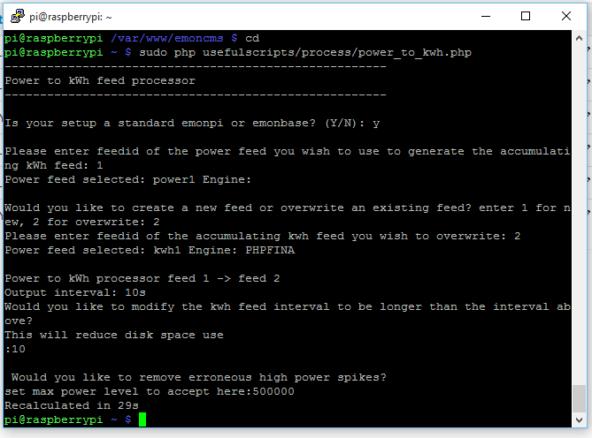

I've started with a fresh install of emoncms v8.5.2 on a spare Raspberry Pi v1 running Raspbian Wheezy, empty data folders & new MYSQL database, and worked through the update process to v9.0, so I thought I'd note the process and post it here in case it helps anyone. You may find that on other OS that the update process may differ slightly.
Whilst in v8, I created two identical 'power' feeds which respectively fed 'kwh' feeds via a 'power to kwh process' and also 'power to kwh/d' feeds. I gave them a suffix of 1 and 2, and created a multigraph comparing both kwh feeds.
I also repeated the whole process of updating from v8.5.2 to the development branch v9.x and got identical results.
The Update Process
This update makes a number of changes to the MYSQL database making it difficult to roll back to v8 once you have updated, so it's probably wise to back up your data folders & MYSQL data before starting.
Stop emonhub & update to v9
sudo service emonhub stop cd /var/www/emoncms git fetch origin git checkout stable git pull
Make feedwriter executable:
sudo chown root:root /var/www/emoncms/scripts/feedwriter sudo chmod 755 /var/www/emoncms/scripts/feedwriter
Create a new settings file:
cp default.settings.php settings.php
Enter your mysql database settings in settings:
nano settings.php
In your browser login to emoncms:
- Check the Administration page - 'Setup > Administration' noting and acting upon any messages reported.
- Update your database - 'Setup > Administration > Update database'.
- Ensure that the correct timezone is selected & saved in 'Setup > My Account'
Flush Redis & start emonhub
redis-cli flushall sudo service emonhub start
Your inputs & feeds should now start updating, and you should again check the Administration page and deal with any messages reported in there.
Feed Errors
If you check your power to kWh feeds, you may see that the value has dropped during the update. This is a bug in v9.0 hopefully to be resolved.

To correct the error, you will need to recalculate the kWh data by using a script.
First, stop emonhub
sudo service emonhub stop
Install and run the script:
cd && sudo git clone https://github.com/emoncms/usefulscripts.git sudo php usefulscripts/process/power_to_kwh.php
Answer the questions when prompted, choosing to overwrite the existing kWh feed. Repeat this for all of your affected kWh feeds.
Please note that entering a value for the kWh feed interval period is compulsory and although I chose 10 (seconds) in this example, you may find that 300 is more appropriate for this type of feed. i.e don't leave it blank! I would assume the same for "set max power level" so enter a value in there too.

Flush Redis & start emonhub
redis-cli flushall sudo service emonhub start

As you can see above, the script has rebuilt the FINA kwh1 data from my FIWA kwh source feed, whilst the kwh2 feed still shows the drop. I've since run the script on the kwh2 feed an that too is now fine.
If you have the 'app' module installed, you will also need to update that to v9 as follows:
cd /var/www/emoncms/Modules/apps git checkout 9.0 git pull
If you are using the 'notify' module, see the mod by Jumpmaster to ensure it also works under v9.
It's probably worth mentioning than when you install/update to v9, a number of scripts will also be available to you to make some of the other tasks easier, such as installing a USB HDD. Please see the Raspberry Pi initial installation guides for more details.
Paul
Re: Update process from v8 to v9
Hi Paul, nice write-up, could this process also work with an emoncms.org back-up?
Paul
Re: Update process from v8 to v9
I't seems that the location of the feed libraries, feeds etc are hardcoded in Trystan's script, so provided that they are met I assume so, but I don't use emoncms.org, or am familiar with the format of the backups.
Paul
Re: Update process from v8 to v9
Thanks for the write up Paul.
For anyone else performing this, the step "Would you like to modify thw kwh feed interval..." is compulsory and 10 is not the default option if it is left blank. I would assume the same for "set max power level" so enter a value in both of these.
[Thanks Kev, good point, I've added it in above - Paul]
Re: Update process from v8 to v9
I thought I'd also post about a couple of issues I ran into during the upgrade. I run this on my own server so this might not be applicable to many people. emoncms 9.0+ requires PHP 5.4+ and I was using PHP 5.3. I used to following guide to perform the PHP upgrade and made sure my emoncms 8.5 install worked as expected before continuing.
https://webtatic.com/packages/php56/
The second issue I found before upgrading to emoncms 9.0 was that I was missing emoncms.log in /var/log/ so I created that and set the permissions to 666.
After this I created a test kwh feed and could see the creation process in the newly created emoncms.log. The kwh feed incremented as expected so I continued with the upgrade.
The upgrade process was then very simple following Paul's guide. If you've pulled the apps repo you will also need to do the following.
cd /var/www/emoncms/Modules/apps
git checkout 9.0
git pull
If you have notify install you will need to modify it.
nano /var/www/emoncms/Modules/notify/notify_menu.php
Change the following line to add 'order' => 10 to the end.
$menu_dropdown[] = array('name'=> dgettext($domain, _("Notify")), 'path'=>"notify" , 'session'=>"write");
$menu_dropdown[] = array('name'=> dgettext($domain, _("Notify")), 'path'=>"notify" , 'session'=>"write", 'order' => 10);
After that the upgrade is working really well and the interface is a nice improvement. Looking forward to future updates!
[Thanks Kev, info re Modules added to above post - Paul]
Re: Update process from v8 to v9
...was that I was missing emoncms.log in /var/log/
I beleive that the log is not created by emoncms until feed data starts flowing. When you start emonhub, and emoncms has something to log, it should create the log file itself.
Paul